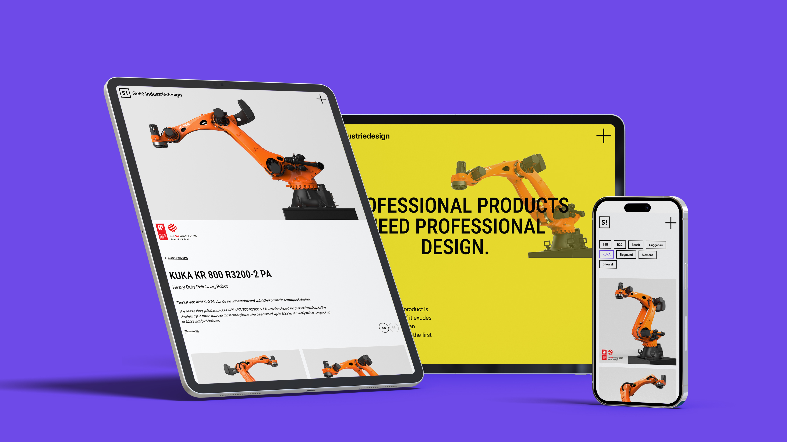
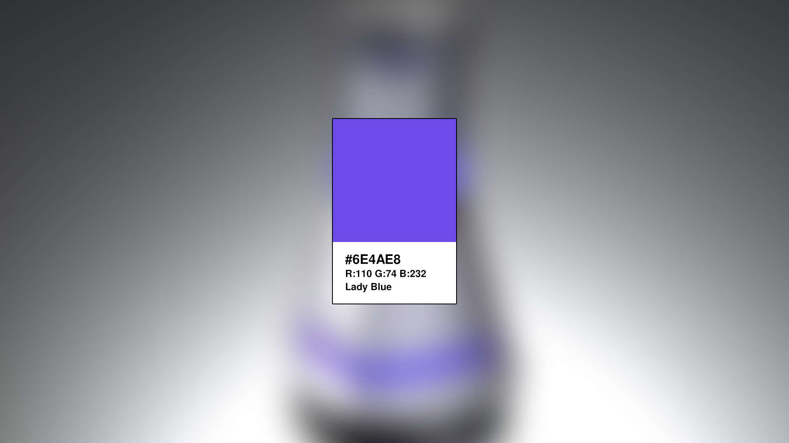
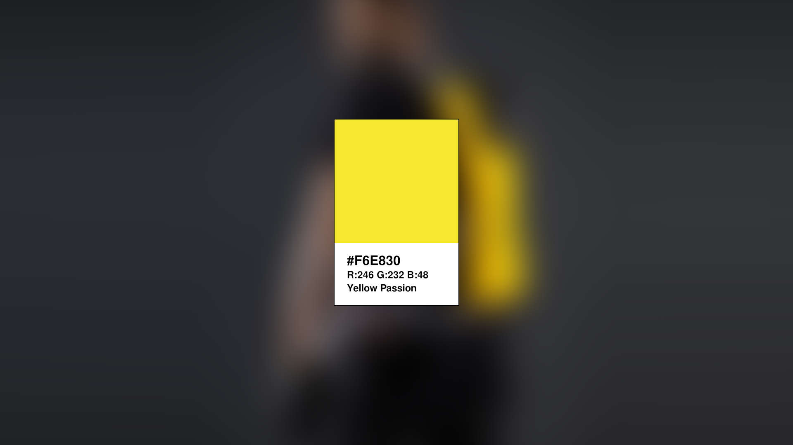
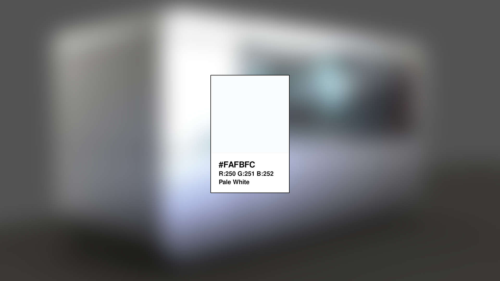
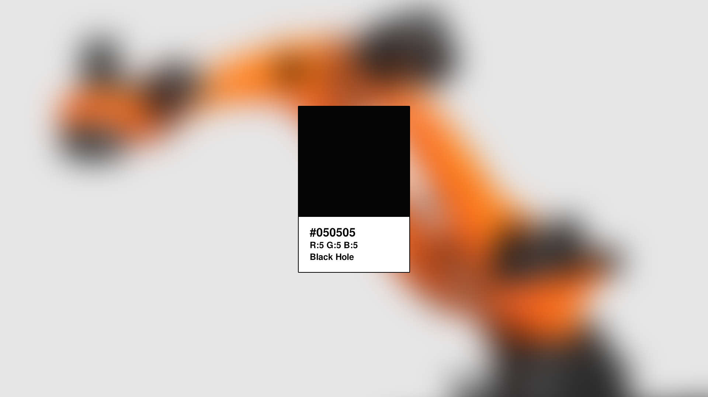

selic.de
Redesign and development of selic.de
After 15 years, it was time to redesign my father's portfolio website. His main wishes were to add motion, to better showcase the high-quality images and renderings, and to highlight his design awards.
Design and Innovation
The new website functions as an extensive digital gallery that prioritizes visual sophistication. A clean, easy-to-navigate interface, striking typography, and an interactive project grid let over 35 years of award-winning industrial work speak for themself. By balancing legacy and future-proofing, the website successfully resembles Selić Industriedesign’s unique hybrid of deep-rooted technical expertise and digital innovation, making it feel both established and cutting-edge.

Color Palette
We chose high-contrast colors to provide clear visual hierarchies and legibility. The bold violet and yellow
tones also challenge the austere norms of industrial design and signal independence of the iconic orange of
KUKA robotics, one of Selić Industriedesign’s main clients. Furthermore, all colors are represented somewhere
in Selić Industriedesign’s work, offering visual unity and consistency. Color names by color-name.com.




Year
2025
Type
Web Design and Development